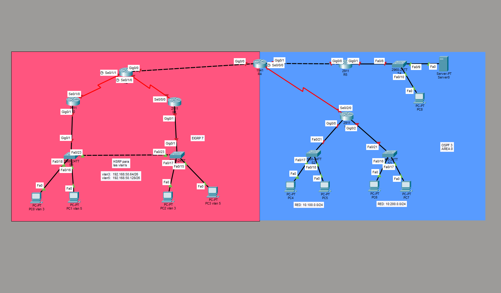

> Network InfrastructureInfraestructura de Red
Configuration of switches, routers and LAN devices; VLANs, trunking and inter-VLAN routing.
Configuración de switches, routers y dispositivos LAN; VLANs, trunking y enrutamiento inter-VLAN.
I design, secure and troubleshoot networks — from VLAN segmentation and dynamic routing to log analysis and incident response. Diseño, aseguro y diagnostico redes — desde segmentación con VLANs y enrutamiento dinámico hasta análisis de logs y respuesta a incidentes.
Network Technician specializing in Technical Support and CCST Cybersecurity certified, with solid expertise in infrastructure troubleshooting and problem resolution. Focused on proactive monitoring, network segmentation, and implementing security controls to ensure system stability and high availability.
Técnica en Redes especializada en Soporte Técnico y certificada en CCST Cybersecurity, con sólido conocimiento en diagnóstico y resolución de problemas de infraestructura. Orientada al monitoreo preventivo, la segmentación de redes y la implementación de controles de seguridad para garantizar la disponibilidad y estabilidad del sistema.
Passionate about event analysis and analytical incident resolution. My background in audiovisual post-production and customer service gives me attention to detail and clear communication under pressure.
Apasionada por el análisis de eventos y la resolución analítica de incidentes. Mi formación en postproducción audiovisual y atención al cliente me aporta atención al detalle y comunicación clara bajo presión.
Configuration of switches, routers and LAN devices; VLANs, trunking and inter-VLAN routing.
Configuración de switches, routers y dispositivos LAN; VLANs, trunking y enrutamiento inter-VLAN.
System monitoring, log file analysis and packet inspection.
Monitoreo de sistemas, análisis de logs e inspección de tráfico.
Incident response lifecycle: detection, analysis, containment and escalation of threats.
Ciclo de vida de respuesta a incidentes: detección, análisis, contención y escalación de amenazas.
OSI and TCP/IP models, secure and insecure communication protocols.
Modelos OSI y TCP/IP, protocolos de comunicación seguros e inseguros.
PC hardware diagnostics, maintenance and repair; Windows and Linux installation and support.
Diagnóstico, mantenimiento y reparación de hardware; instalación y soporte de Windows y Linux.
AWS cloud fundamentals, basic Python scripting, Power BI dashboards and intermediate Excel.
Fundamentos de nube con AWS, scripting básico en Python, dashboards en Power BI y Excel intermedio.

Two LAN topologies running OSPF and EIGRP with route redistribution, VLAN segmentation, router-on-a-stick and HSRP gateway redundancy.
Dos topologías LAN con OSPF y EIGRP, redistribución de rutas, segmentación con VLANs, router-on-a-stick y redundancia de gateway con HSRP.
Open case fileVer proyecto →New security and networking labs are being documented. Check back soon.
Estoy documentando nuevos laboratorios de seguridad y redes. Vuelve pronto.
Open to opportunities in network support, NOC/SOC and cybersecurity roles. Feel free to reach out.
Abierta a oportunidades en soporte de redes, NOC/SOC y ciberseguridad. Escríbeme con confianza.